Bora encarar uma
aventura?

VIAGEM INTERESTELAR
Mercúrio, o planeta mais próximo do Sol, é um mundo de extremos.
Com temperaturas variando entre -180°C à noite e 430°C durante o dia,
ele desafia qualquer ideia de conforto. Sua superfície, cheia de crateras,
lembra a da Lua, e seus dias são mais longos que seus anos.
Mercúrio não tem atmosfera para proteger da radiação solar,
tornando-o um planeta hostil. Porém, sua proximidade com o Sol
e seu mistério aguardam quem se atrever a explorar. O que mais
poderia esconder esse pequeno gigante?
VOCÊ JA CHEGOU MUITO LONGE!!! CUIDADO AO NAVEGAR
Vênus, o planeta mais brilhante do céu noturno, esconde um ambiente extremo.
Com temperaturas que ultrapassam 460°C, é ainda mais quente que Mercúrio.
Sua densa atmosfera de dióxido de carbono cria um efeito estufa devastador,
e seus ventos ácidos varrem a superfície inóspita.
Apesar disso, Vênus fascina por sua semelhança em tamanho e composição com a Terra.
Explorar Vênus é como visitar um espelho distorcido do nosso próprio planeta,
um lembrete poderoso dos mistérios e perigos que existem no universo.
Quem ousará enfrentar esse mundo incandescente?